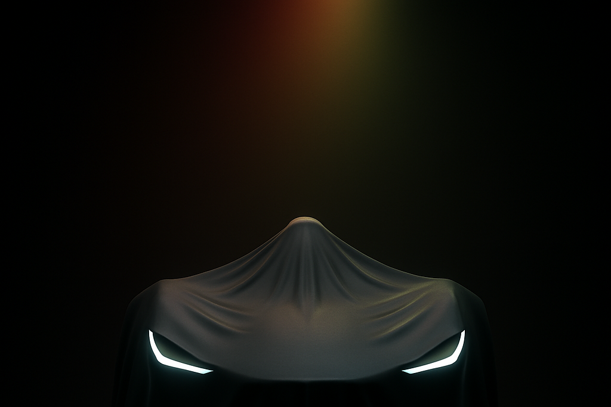

Inicio
¿Qué es?
Reservar
El verdadero y único 'Made in Bolivia': más que piezas armadas, somos las piezas que construyen. Más que ensamblar componentes, nosotros los creamos. Más que una promesa, una realidad.

WARA
Precio
XXXX Bs
En el momento correcto
En el lugar correcto
Reservar
+591 60713875
Al completar el formulario podrás optar por las primeras pruebas de manejo gratis